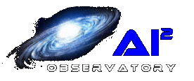
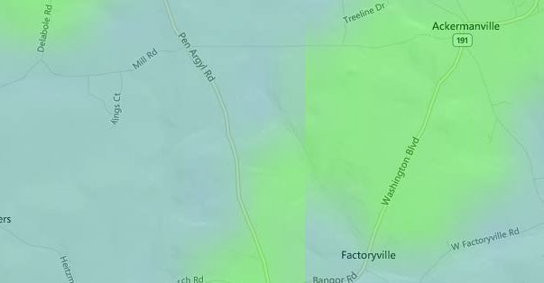
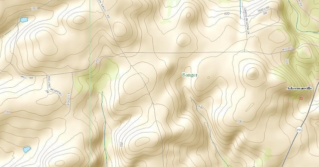

Station 1 (ST1) was the first observatory in the AI2 network. By the end of 2017, Station 2 will be coming on-line, and shortly afterwards, time slots will be made available. Groundbreaking on Station 3 began in June 2017 and first light planned January 2020. The 3 observatories are expected to meet a committed 5 year demand and between them will be capable of most types of study from UVA through the near infrared.
Currently ST1 is the primary research facility. Based under dark rural skies in Pennsylvania, the observatory has made major contributions in the fields of spectroscopy, photometry and astrophotography. Most data acquisition at ST1 is used to improve current astronomical catalogs and surveys. The methods used here help validate, and/or bring more precision to, the recorded positions, velocities, compositions, luminosities, distances (and other attributes) of stellar and deep-sky objects. While the primary objective at ST1 is clean and reliable data collection, some data reduction services are also available.
Professional and semi-professional research projects are also performed here by external teams operating the instruments remotely. ST1 data has been used to study galaxy evolution, star formation, minor planet orbits and nebulae emissions just to name a few. Some projects are conducted over a single night and others have spanned a few months or longer.
Over 50% of the observing budget is reserved for educational programs. Investigators, RAs and students are provided full access to perform their inquiry. Most of AI2 network’s funding comes from educational grants, awards and endowments so University related services are the main goal. AI2 Observatories have active partnerships with National Space Grant Consortium chapters, the American Association of Variable Star Observers and many other local educational institutions and research facilities.
Public outreach events are also offered a few times a year.
ST1 seeing is typically good (@ 1 arc sec) and over half of the nights are cloudless (or near cloudless). The light pollution ratings are good (Bortle 4 and Danko 4.5). Horizons are low with access to almost -50* DEC. The sky is generally transparent with low humidity and a naked eye visibility (NELM) down to 6.5 mag. Following is a light pollution map of the area.

A local relief survey shows variation from only 100-1100 feet. This ‘gently rolling’ topography keeps the air stable and limits currents.

The horizon is accessible in just about all directions. Roughly 340 degrees are visible at all times. There is a small obstruction at NNW that rises up halfway to Polaris. Small enough that most of the sky being blocked at any one point of the night will come into view later. The arc of the ecliptic however is completely viewable. The MilkyWay is rich and a few galaxies can be seen with the naked eye.